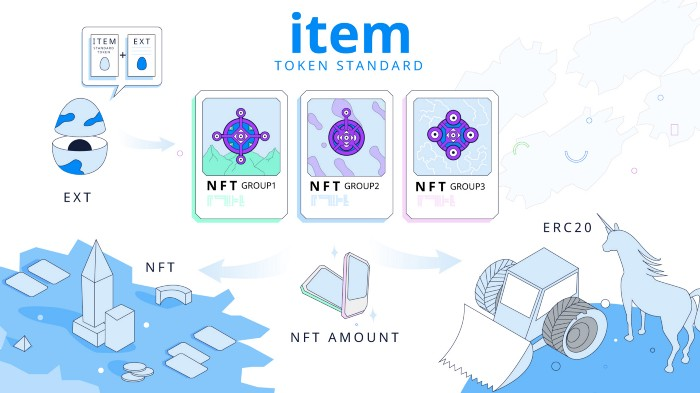
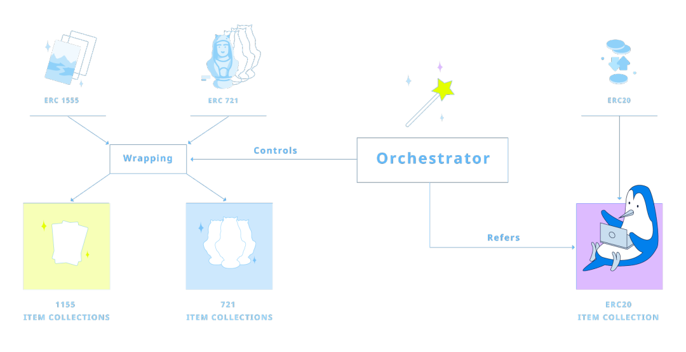
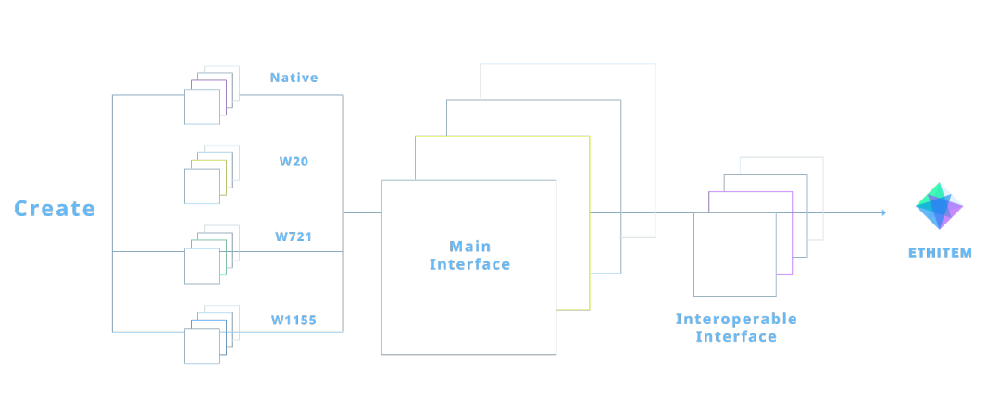

How ITEM Standard works
ITEM is a new object standard on top of Ethereum. It synergizes the properties of the three most common interfaces—ERC20, ERC721, ERC1155—and is thus interoperable with all existing Ethereum applications. By taking advantage of the sophisticated engineering behind ERC1155s, ITEMs can be used as an ERC20, ERC721 or as an ERC1155 as required.
ITEMs don’t need centralized storage to save objectId info. NFT data is saved in a specific ERC20 token that can also work as a standalone one, and allow for the transfer of parts of an atomic object. The ERC20 implementation has a unique Token Id, and its supply is the entire supply of that Token Id.
EthItems are designed to be extendable. Every new Collection can be hosted by a specific wallet, or better yet by a Smart Contract that has the right to mint new Items. This allows all developers to build their own minting rules and create an entire decentralized application based on it in a totally reusable general-purpose way. This is because, for the first time, the application’s logic (e.g. for a videogame) is fully decoupled from the NFT implementation itself.

Wrapped ITEMs vs Native ITEMs
Native ITEMs are a Collection’s objects that, via their Extensions, can perform complex behaviors specified optionally in the Extension logic. These extra capabilities are up to the developers writing the Extension logic.
Wrapped ITEMs, on the other hand, retain all the capabilities of the default ITEM standard, but lose any extra ones while wrapped. For example, once wrapped, A DAO or DFO governance token cannot interact with the DAO or DFO (until unwrapped), but can still be traded like any ITEM using a gas-efficient method like BatchTransfer.
To be clear: Wrapped items CANNOT have Extensions.
Unique vs fungible ITEMs
For the EthITEM standard, there are two different ways to handle tokens. The first is for tokens with a limited supply of one, the second for tokens with a limited supply of more than one. Let’s say you want to wrap an NFT with a supply of 1. How can we guarantee that the original NFT will still be accessible and function as a unique token, but not be inflated?
The solution is in the way a unique token is wrapped as an ITEM. Once you wrap it, you’ll be able to redeem its underlying assets entirely. ETHITEM stores information on how many of the generated ITEMs have been burnt to redeem the underlying assets. If someone rewraps the unique token, he will obtain the number of tokens burnt in the first place.

Let's break this down with an example.
Peach has a unique NFT with a supply of 1. > She wraps it, creating 1 ITEM, and adds it to a DEX pool by "selling" it. > Waluigi wants to redeem Peach's NFT. > He buys 51% (0.51) of the NFT’s supply. > He then unwraps it, burning 0.51 tokens and obtaining the original NFT. > Goku buys the original NFT from Waluigi. > If he re-wraps the NFT, Goku will only receive the 0.51 itemized tokens that Waluigi bought from the DEX pool supply.
This approach ensures that even unique NFTs can be wrapped and made fungible while still retaining their uniqueness if redeemed.
The above process happens whenever we are left with only 1 ITEM inside the wrapped collection or it is natively unique (see “Wrapped ITEMs vs Native ITEMs”).
Suppose we have the “FabulousUnicornCard” of a hypothetical card game, and that the supply inside the collection is greater than 1. To redeem the original (aka unwrap it by burning the item), or use it in the case of a native ITEM, you need 1 to do so until all but 1 of the supply is burnt, at which point the above rule of needing only 51% of the ITEM applies.
An analog behavior happens with respect to the “transfer” functionality. When you transfer 0.51 (or more) of a unique ITEM, the receiver will see 1. If you move 0.49 (or less), they’ll see 0.
Permit Transactions (ERC-20 EIP-712 Integration)
Any ERC20 version of any ITEM (native or wrapped) can interact with dApps more easily if integrated with EIP712. For end-users, this means replacing the need for manual Approval before using the ERC20 ITEMs with a simple signing, the same used by UniSwap LPs.
Address Reconstruction
In a Native collection, when a new Item is minted, the generated objectId value corresponds, after hexadecimal conversion, to the address of the ERC20 token created.
//The function to call in a Native EthItem Collection is
//function mint(uint256 amount, string calldata tokenName, string calldata tokenSymbol, string calldata objectUri, bool editable) external returns(uint256 newObjectId, address interoperableInterfaceAddress);
//Let's suppose the call returns you the following values:
var objectId = "115229128895248074900976864697884278495202009447";
var interoperableInterfaceAddress = "0x142f0d872a9579c61098c783aed1c5f9404c6167"
//The HEX version of the objectId is EXACTLY the address of the created ERC20 Token
var builtAddress = web3.utils.toHex(objectId);
//-> will exactly return 0x142f0d872a9579c61098c783aed1c5f9404c6167, which is equal to the original interoperableInterfaceAddress value.
//Now let's retrieve back the objectId from the interoperableInterfaceAddress
//Convert in abi
var abiEncodedValue = web3.eth.abi.encodeParameter('address', interoperableInterfaceAddress);
//-> will generate the value "0x000000000000000000000000142f0d872a9579c61098c783aed1c5f9404c6167"
//Convert in uint256
var builtObjectId = web3.eth.abi.decodeParameter('uint256', abiEncodedValue);
//-> will exactly return "115229128895248074900976864697884278495202009447", which is equal to the original objectId value.
Integrate Your dApp With ITEMs
Building on top of the ITEM standard is a cool new way to make dApps more decentralized and interoperable, while avoiding many common technical problems.
Some General Unaddressed Issues In ETH Development
Developing applications on top of Ethereum is one of the biggest challenges in tech—for teams big and small—due to a lack of resources and limitations with the blockchain. The most difficult thing is building applications that are general-purpose and decentralized by design, which is to say unreliant on any sort of centralized decision-making.
By limiting dependence on third-party intermediaries, the ITEM architecture is designed to resolve these and other major issues facing dApps today.
Token Tracking Solution
One highly controversial and challenging problem in Ethereum development is the tracking of all existing tokens. It is impossible for a dApp to do this efficiently without relying on intermediary servers, forcing it to program its frontend—the most centralized and difficult to govern part—with echelons of hardcoded addresses. This puts it in the uncomfortable and untenable position of arbitrarily prioritizing some projects over others in order to improve their user experience.
To resolve this, the architecture for ITEMs (native and wrapped) is based on a general-purpose factory standard that generates all of the standardized methodology for every token.
This means that dApps only need to follow these steps:
//First of all, let's suppose you have a 'configuration.json' file in your dapp, containing all the configuration parameters you need (e.g. ABIs, custom parameters)
var configuration = require("configuration.json");
//Get the Web3 engine
var Web3 = require('web3');
//Initialize your connection with a Ethereum node
var web3 = new Web3(configuration.web3URLConnectionString);
//Retrieve the last version of the EthItem Orchestrator Smart Contract
var ethItemOrchestrator = new web3.eth.Contract(configuration.ethItemOrchestratorABI, configuration.ethItemOrchestratorAddress);
//Prepare a var to collect all the ITEMs
var allCollections = [];
Phase 1) Retrieve all Wrapped ERC20 Collections directly by calling the Orchestrator. Each ERC20 Wrapped Collection is a Singleton, so there will always be just one active at a time, and its address is well-known. But the Orchestrator, of course, also collects all previous inactive versions (the last one is the currently active one).
var ethItemERC20WrapperAddresses = await ethItemOrchestrator.methods.erc20WrapperAddresses().call();
for(var collectionAddress of ethItemERC20WrapperAddresses) {
//Normalize the address for eventual search by address purposes
collectionAddress = web3.utils.toChecksumAddress(collectionAddress);
//Collection category to distinguish all collection types, "W20" means that this Collection is a Wrapper of ERC20 Tokens
var collectionCategory = "W20";
var collectionABI = configuration.W20ABI;
//The needed basic info to operate are of course the Collection address, category and Smart Contract. They can be of course enriched
allCollections.push({
address : collectionAddress,
category : collectionCategory,
contract : new web3.eth.Contract(collectionABI, collectionAddress)
});
}
Phase 2) Retrieve all the other Collections passing by their factories. There will always be just one active EthItem Factory at a time, but the Orchestrator, of course, also collects all previous, inactive versions (the last one is the currently active one).
var factoryAddresses = await
ethItemOrchestrator.methods.factories().call();
Factories emit a specific event for every Collection type (including ERC20). First param is the Collection model address, second param is the Collection model version, third param is the Collection address, fourth param is the original Factory caller (the Orchestrator).
//First three params are indexed to make specific researches
//A key-value approach is used to keep track of the respective Collection ABI and Category
var ethItemFactoryEventsAndABIValues = {
"NewNativeCreated(address,uint256,address,address)" : "NativeABI",
"NewWrappedERC1155Created(address,uint256,address,address)" : "W1155ABI",
"NewWrappedERC721Created(address,uint256,address,address)" : "W721ABI"/*,
"NewWrappedERC20Created(address,uint256,address,address)" : "W20ABI"*/
};
The last event is of course commented because we already retrieved all the ERC20 Wrappers in Phase 1. You can choose of course to receive the Collections of all Categories or just the ones you're interested in just by removing the irrelevant events in the ethItemFactoryEventsAndABIValues object above.
//Let's convert plain events in keccak256 topics so they can be used for the web3.eth.getPastLogs call
var ethItemFactoryTopicsAndCollectionABIValues = {};
Object.entries(ethItemFactoryEventsAndABIValues).forEach(it => ethItemFactoryTopicsAndCollectionABIValues[web3.utils.sha3(it[0])] = it[1]);
//First argument of the topics array is an array of three hash elements. This means that first log topic can be one of the passed arguments (like the "OR" operator in Web2 DB queries)
var topics = [Object.keys(ethItemFactoryTopicsAndCollectionABIValues)];
//Call the blockchain.
//Of course this is a generic-purpose code, it can be more efficient by using just the topics you need (e.g. give me only the Wrapped ERC721 Collections) or use from/to block tranches.
var logs = await web3.eth.getPastLogs({
address : factoryAddresses,
topics
});
//Navigate the logs to obtain info about collections
for (var log of logs) {
//Retrieve the correct ABI using the first log topic through the key/value map previously made
var collectionABIValue = ethItemFactoryTopicsAndCollectionABIValues[log.topics[0]];
//As already said, last topic param is che Collection address
var collectionAddress = web3.eth.abi.decodeParameter("address", log.topics[log.topics.length - 1]);
//Make a checksum address for eventual off-chain research purposes
collectionAddress = web3.utils.toChecksumAddress(collectionAddress);
//Grab the correct Collection ABI from the configuration file
var collectionABI = configuration[collectionABIValue];
//Extract Collection Category label from the ABI value. Just remove the latest 3 "ABI" characters from the string
var collectionCategory = collectionABIValue.split("ABI")[0];
//Put everything in the allCollections array
allCollections.push({
address : collectionAddress,
category : collectionCategory,
contract : new web3.eth.Contract(collectionABI, collectionAddress)
});
}
//Use all the collections as you wish
console.table(allCollections.map(it => {return {address : it.address, category : it.category}}));
This allows you to receive all of the tokens that exist in the Ethereum Ecosystem (wrapped into ITEMs), instead of relying on hardcoded lists of well-known tokens or white-listed decisions by dApp frontend owners.
You can also request all of the existing ITEMs from specific Collections using this call:
Request Every ITEM for a single collection:
//Grab the desired Collection addresses. You can choose any single Collection or group of Collections you want. In this case we grab all
var collectionAddresses = allCollections.map(it => it.address);
//The EthItem Token Standard implements the event NewItem(uint256 indexed objectId, address indexed interoperableInterfaceAddress) raised every time a new Item is created/wrapped for the first time
var topics = [web3.utils.sha3("NewItem(uint256,address)")];
var logs = await web3.eth.getPastLogs({
address : collectionAddresses,
topics
});
//Navigate logs
for(var log of logs) {
//Get the Collection that created this item (the original event emitter)
var collectionAddress = web3.utils.toChecksumAddress(log.address);
var collection = allCollections.filter(it => it.address === collectionAddress)[0];
//If not already done, initialize the items array in the Collection
collection.items = collection.items || [];
//Object Id is the first argument param of the Event
var collectionItemObjectId = web3.eth.abi.decodeParameter("uint256", log.topics[1]);
//Object ERC20 Wrapper is the second param of the Event
var interoperableInterfaceAddress = web3.eth.abi.decodeParameter("uint256", log.topics[2]);
//Create the contract
var collectionItemInteroperableInterfaceContract = new web3.eth.Contract(configuration.IEthItemInteroperableInterfaceABI, interoperableInterfaceAddress);
//Assemble the Collection Item, you can add all the additional info you want (e.g. cross-referencing the Collection this Item belongs to)
var collectionItem = {
objectId : collectionItemObjectId,
address : collectionItemInteroperableAddress,
contract : collectionItemInteroperableInterfaceContract
};
//Add every single Collection Item to the corresponding Collection's array
collection.items.push(collectionItem);
}
Token Tracking Solution
Non-standard ERC implementations are a nightmare for dApp developers. The most popular example is USDT, valued at more than $17B. Just to be able to manage USDT, dApps are forced to hardcode their Smart Contracts with customized implementations.
ITEMs, however, all share the same standard methods. It is in fact impossible for them not to. Using ITEMs, dApp developers can finally work together on building amazing things without having to deal with broken ERC20s, non-standard interpretations of ERC1155, and so on…
The ITEM standard can also be upgraded via the ETHITEM DFO to new versions that incorporate new standards alongside the evolution of the Ethereum Ecosystem. But anytime the EthITEM DFO does upgrade the factory contract, this doesn’t automatically upgrade ITEMs of an older version. It enables ITEMs to upgrade themselves, and allows them to easily switch back and forth between old and new versions.
The Version model is a LEGO from one “Starter” Version, one Main Interface version and one Interoperable Interface version.

For “The Starter” there are 4 types: Native, Wrapped ERC20, Wrapped ERC721, Wrapped ERC1155. The Main Interface and the Interoperable Interface are just two separate types. Basically like this:

The versions are expressed in this simple way:
[Starter indicator_] - [Interoperable Interface Version] - [Main Interface Version] - [Starter Implementation]
Native ITEM:
Native_1.1.1 (Created by the Native Starter, Version 1, Main Interface Version 1 and Interoperable Interface Version 1)
ERC721 Wrapped:
W721_1.3.6 (Created by the Wrapper ERC721 Starter Version 6, Main Interface Version 1 and Interoperable Interface Version 3)
ERC1155 Wrapped:
W1155_2.4.9 (Created by the Wrapper ERC1155 Starter Version 9, Main Interface Version 2 and Interoperable Interface Version 4)
ERC20 Wrapped:
W20_1.1.1 (Created by the Wrapper ERC20 Starter Version 1, Main Interface Version 1 and Interoperable Interface Version 1)
//The version number of the EthItem Main Interface implemented by this Collection
var mainInterfaceVersion = await collection.contract.methods.mainInterfaceVersion().call();
//The version number of the EthItem Interoperable Interface model containing the code of every Item of this Collection;
var interoperableInterfaceModelVersion = (await collection.contract.methods.interoperableInterfaceModel().call())[1];
//The address of the Collection created by the Factory
var modelVersion = await collection.contract.methods.modelVersion().call();
//So every Collection cumulative version can be expressed in a way similar to this
var collectionVersion = `${category}_${mainInterfaceVersion}.${interoperableInterfaceModelVersion}.${modelVersion}`;
Example: W721_1.5.3 means that the Collection is an ERC721 Wrapper one, based on the first version of the EthItem Token Standard Interface. All its Items implement the Interoperable Interface model v5 and it has been created following the ERC721Wrapper v3 Collection Model.
Thanks to the event architecture, this structure helps dApps call specific ITEMs based not just on the type (native, wrapped) but also on the versions they trust.
For example, if v0.3 of the Main Interface has any bugs or functionalities that a dApp doesn't support, or which are in some way malicious, the dApp can just call items from all of the versions aside from this specific one.
Build Your Own On-Chain Graph Tracker
You can also easily call Collections based on Category and Version reading events:
//The Eth Item Factory has 4 different events, raised when a new Collection is created
var ethItemFactoryEventsByVersionAndABIValues = {
"NewNativeCreated(uint256,uint256,uint256,address)" : "NativeABI",
"NewWrappedERC1155Created(uint256,uint256,uint256,address)" : "W1155ABI",
"NewWrappedERC721Created(uint256,uint256,uint256,address)" : "W721ABI",
"NewWrappedERC20Created(uint256,uint256,uint256,address)" : "W20ABI"
};
For every event, the fields are the same:
---uint256 indexed standardVersion
---uint256 indexed interoperableInterfaceModelVersion
---uint256 indexed modelVersion
---address ethItemAddress : the address of the Collection created by the Factory
You can choose of course to receive the Collections of all Categories or just the ones you're interested in by removing the irrelevant events in the ethItemFactoryEventsByVersionAndABIValues object above
//Let's convert plain events in keccak256 topics so they can be used for the web3.eth.getPastLogs call
var ethItemFactoryTopicsAndCollectionABIValues = {};
Object.entries(ethItemFactoryEventsByVersionAndABIValues).forEach(it => ethItemFactoryTopicsAndCollectionABIValues[web3.utils.sha3(it[0])] = it[1]);
//First argument of the topics array is an array of three hash elements. This means that first log topic can be one of the passed arguments (like the "OR" operator in Web2 DB queries)
var topics = [Object.keys(ethItemFactoryTopicsAndCollectionABIValues)];
//Now you can customize the query as you wish, e.g.:
//All the Collections we want must follow the first version of the EthItem Token Standard
topics.push(web3.eth.abi.encodeParameter('uint256', 1));
//No matter what is the version of the Interoperable Interface Model
topics.push([]);
//All the Collections must be generated by their respective models, but only for version 2 or 5
topics.push([web3.eth.abi.encodeParameter('uint256', 2), web3.eth.abi.encodeParameter('uint256', 5)]);
//Call the blockchain.
//Of course this is a generic-purpose code, it can be more efficient by using just the topics you need (e.g. give me only the Wrapped ERC721 Collections) or use from/to block tranches.
var logs = await web3.eth.getPastLogs({
address : factoryAddresses,
topics
});
//Navigate the logs to obtain info about collections
for (var log of logs) {
//Retrieve the correct ABI using the first log topic through the key/value map previously made
var collectionABIValue = ethItemFactoryTopicsAndCollectionABIValues[log.topics[0]];
//As already said, last topic param is che Collection address
var collectionAddress = web3.eth.abi.decodeParameter("address", log.topics[log.topics.length - 1]);
//Make a checksum address for eventual off-chain research purposes
collectionAddress = web3.utils.toChecksumAddress(collectionAddress);
//Grab the correct Collection ABI from the configuration file
var collectionABI = configuration[collectionABIValue];
//Extract Collection Category label from the ABI value. Just remove the latest 3 "ABI" characters from the string
var collectionCategory = collectionABIValue.split("ABI")[0];
//Put everything in the allCollections array
allCollections.push({
address : collectionAddress,
category : collectionCategory,
contract : new web3.eth.Contract(collectionABI, collectionAddress)
});
}
//Use all the collections as you wish
console.table(allCollections.map(it => {return {address : it.address, category : it.category}}));
Easy Wrap and Unwrap
Building with ITEMs ensures total interoperability with every Token and dApp that exists on the Ethereum Network. Using the ETHITEM standard methodology, you can build any kind of dApp to interact with ITEMs by wrapping and unwrapping user funds in the background. You just need to add these calls into your Contracts:
Wrap ERC20
//Get my favorite ERC20 address
var myFavoriteERC20Token = new web3.eth.Contract(configuration.ERC20ABI, configuration.myFavoriteERC20Address);
//Get the amount to wrap, expressed in decimals.
var myFavoriteERC20AmountToWrap = configuration.myFavoriteERC20AmountToWrap;
//Call the Orchestrator and then the KnowledgeBase to retrieve the last ERC20Wrapper ITEM
var knowledgeBase = new web3.eth.Contract(configuration.EthItemKnowledgeBaseABI , await ethItemOrchestrator.knowledgeBase().call());
var collectionAddress = await knowledgeBase.methods.erc20Wrapper().call();
//Normalize the address for eventual search by address purposes
collectionAddress = web3.utils.toChecksumAddress(collectionAddress);
//Collection category to distinguish all collection types, "W20" means that this Collection is a Wrapper of ERC20 Tokens
var collectionCategory = "W20";
var collectionABI = configuration.W20ABI;
//The needed basic info to operate are of course the Collection address, category and Smart Contract. They can be of course enriched
var collection = {
address : collectionAddress,
category : collectionCategory,
contract : new web3.eth.Contract(collectionABI, collectionAddress)
};
//First of all, you need to approve the funds transfer by the Collection
await myFavoriteERC20Token.methods.approve(collection.address, myFavoriteERC20AmountToWrap).send();
//Now you can call the Collection to wrap tokens.
//ERC20Wrapper exposes the method
//function mint(address erc20TokenAddress, uint256 amount) external returns (uint256 objectId, address wrapperAddress);
//To let you wrap your tokens
await collection.contract.methods['mint(address,uint256)'](myFavoriteERC20Token.options.address, myFavoriteERC20AmountToWrap).send();
//Now that you minted your tokens, you can easily retrieve the objectId corresponding to the ERC20 Token address you used
//ERC20Wrapper exposed the method
//function object(address erc20TokenAddress) external view returns (uint256 objectId);
//To retrieve the objectId you need.
var objectId = await collection.contract.methods.object(myFavoriteERC20Token.options.address).call();
//There will always be a unique objectId for every wrapped ERC20 Token contract. It is created the first time someone mints tokens of that ERC20
//Now you can use that objectId to interact with your balance tokens, e.g. you can retrieve your balance
var myBalanceInCollection = await collection.contract.methods.balanceOf(web3.eth.accounts[0], objecId).call();
//And transfer it to another account
await collection.contract.methods.safeTransferFrom(web3.eth.accounts[0], configuration.receiverAccountAddress, objectId, myBalanceInCollection, "0x").send();
//If you want to wrap some ETH, you need to use the mintETH() function
await collection.contract.methods.mintETH().send({ from: web3.eth.accounts[0], gas: configuration.transactionHash, value: configuration.ETHAmountToWrap});
//The objectId representing ETH can be easily grabbed using the ETHEREUM_OBJECT_ID function
var ethereumObjectId = await collection.contract.methods.ETHEREUM_OBJECT_ID().call();
//Now you can use that objectId to interact with your balance tokens, e.g. you can retrieve your balance
var myEthBalanceInCollection = await collection.contract.methods.balanceOf(web3.eth.accounts[0], ethereumObjectId).call();
//And transfer it to another account
await collection.contract.methods.safeTransferFrom(web3.eth.accounts[0], configuration.receiverAccountAddress, myEthBalanceInCollection, myEthBalanceInCollection, "0x").send();
Wrap ERC1155
//Get my favorite ERC1155 address
var myFavoriteERC1155Token = new web3.eth.Contract(configuration.ERC1155ABI, configuration.myFavoriteERC1155Address);
//Get the objectId to wrap
var objectId = configuration.myFavoriteERC1155ObjectToWrap;
//Get the amount to wrap
var myFavoriteERC1155AmountToWrap = configuration.myFavoriteERC1155AmountToWrap;
//ERC1155 Tokens can be wrapped in two ways: transferring original NFTs to wrap to Orchestrator or directly to the previously created Wrapper.
//The second way helps to save gas, but can be of course used only if someone has previously wrapped some NFTs of the desired Token.
//So let's start defining the Orchestrator as the default receiver, then try to replace it retrieving the Wrapper, if any.
var nftReceiver = ethItemOrchestrator.options.address;
//For computation operations
var voidEthereumAddress = "0x0000000000000000000000000000000000000000";
//Encapsulate the logic inside a function so we are able to re-use it in future
var retrieveLatestWrapperAddress = async function retrieveLatestWrapperAddress(tokenAddress) {
//It is always recommended to wrap a token using the latest version of the corresponding model.
//This info is in the active Factory referenced by the Orchestrator
var factoryAddress = await ethItemOrchestrator.methods.factory().call();
var factory = new web3.eth.Contract(configuration.EthItemFactoryABI, factoryAddress);
//Position 0 is model address, position 1 is model version
var modelVersion = (await factory.methods.erc1155WrapperModel())[1];
//The EthItem Knowledge Bases, referenced by the Orchestrator, contain all previously wrapped Tokens
var knowledgeBasesAddresses = await ethItemOrchestrator.methods.knowledgeBases().call();
//We don't know where the wrapper is located, so we need to search in all existing knowledge bases
//Knowledge Base has an extremely simple logic, so it shouldn't change frequently and the list stays short
for(var knowledgeBaseAddress of knowledgeBasesAddresses) {
var knowledgeBase = new web3.eth.Contract(configuration.EthItemKnowledgeBaseABI, knowledgeBaseAddress);
var wrapperAddress = await knowledgeBase.methods.wrapper(tokenAddress, modelVersion);
//If the result is different from address(0), then we found our guy
if(wrapperAddress !== voidEthereumAddress) {
return wrapperAddress;
}
}
//Found nothing, returns address(0)
return voidEthereumAddress;
};
//Use the previously written logic
var wAddr = await retrieveLatestWrapperAddress(myFavoriteERC1155Token.options.address);
//If the computation returns an already-created Wrapper, we can save more gas bypassing the Orchestrator as a receiver
if(wAddr !== voidEthereumAddress) {
nftReceiver = wAddr;
}
//Now we can transfer our NFT token to the receiver through the ERC1155 safeTransferFrom function to wrap it, no matter if the receiver is the Orchestrator or the Wrapper
await myFavoriteERC1155Token.methods.safeTransferFrom(web3.eth.accounts[0], nftReceiver, objectId, myFavoriteERC1155AmountToWrap, "0x").send();
//It can be also possible to use the safeBatchTransferFrom to wrap multiple NFTs at the same time.
await
myFavoriteERC1155Token.methods.safeBatchTransferFrom(web3.eth.accounts[0],
nftReceiver, objectIdArray, myFavoriteERC1155AmountToWrapArray,
"0x").send();
//Now we are sure that the Wrapper exists, we can call the previously created function to easily retrieve it
var collectionAddress = await retrieveLatestWrapperAddress(myFavoriteERC1155Token.options.address);
//Normalize the address for eventual search by address purposes
collectionAddress = web3.utils.toChecksumAddress(collectionAddress);
//Collection category to distinguish all collection types, "W1155" means that this Collection is a Wrapper of ERC1155 NFTs
var collectionCategory = "W1155";
var collectionABI = configuration.W1155ABI;
//The needed basic info to operate are of course the Collection address, category and Smart Contract. They can be of course enriched
var collection = {
address : collectionAddress,
category : collectionCategory,
contract : new web3.eth.Contract(collectionABI, collectionAddress)
};
//Object Id values of ERC1155 Wrapped items are the same of the original ones, so there is no need to retrieve them
//Now you can use the objectId to interact with your balance tokens, e.g. you can retrieve your balance
var myBalanceInCollection = await collection.contract.methods.balanceOf(web3.eth.accounts[0], objecId).call();
//And transfer it to another account
await collection.contract.methods.safeTransferFrom(web3.eth.accounts[0], configuration.receiverAccountAddress, objectId, myBalanceInCollection, "0x").send();
Wrap ERC721
//Get my favorite ERC721 address
var myFavoriteERC721Token = new web3.eth.Contract(configuration.ERC721ABI, configuration.myFavoriteERC721Address);
//Get the objectId to wrap
var objectId = configuration.myFavoriteERC721ObjectToWrap;
//ERC721 Tokens can be wrapped in two ways: transferring original NFTs to wrap to Orchestrator or directly to the previously created Wrapper.
//The second way helps to save gas, but can be of course used only if someone has previously wrapped some NFTs of the desired Token.
//So let's start defining the Orchestrator as the default receiver, then try to replace it retrieving the Wrapper, if any.
var nftReceiver = ethItemOrchestrator.options.address;
//For computation operations
var voidEthereumAddress = "0x0000000000000000000000000000000000000000";
//Encapsulate the logic inside a function so we are able to re-use it in future
var retrieveLatestWrapperAddress = async function retrieveLatestWrapperAddress(tokenAddress) {
//It is always recommended to wrap a token using the latest version of the corresponding model.
//This info is in the active Factory referenced by the Orchestrator
var factoryAddress = await ethItemOrchestrator.methods.factory().call();
var factory = new web3.eth.Contract(configuration.EthItemFactoryABI, factoryAddress);
//Position 0 is model address, position 1 is model version
var modelVersion = (await factory.methods.erc721WrapperModel())[1];
//The EthItem Knowledge Bases, referenced by the Orchestrator, contain all previously wrapped Tokens
var knowledgeBasesAddresses = await ethItemOrchestrator.methods.knowledgeBases().call();
//We don't know where the wrapper is located, so we need to search in all existing knowledge bases
//Knowledge Base has an extremely simple logic, so it shouldn't change frequently and the list stays short
for(var knowledgeBaseAddress of knowledgeBasesAddresses) {
var knowledgeBase = new web3.eth.Contract(configuration.EthItemKnowledgeBaseABI, knowledgeBaseAddress);
var wrapperAddress = await knowledgeBase.methods.wrapper(tokenAddress, modelVersion);
//If the result is different from address(0), then we found our guy
if(wrapperAddress !== voidEthereumAddress) {
return wrapperAddress;
}
}
//Found nothing, returns address(0)
return voidEthereumAddress;
};
//Use the previously written logic
var wAddr = await retrieveLatestWrapperAddress(myFavoriteERC721Token.options.address);
//If the computation returns an already-created Wrapper, we can save more gas bypassing the Orchestrator as a receiver
if(wAddr !== voidEthereumAddress) {
nftReceiver = wAddr;
}
//Now we can transfer our NFT token to the receiver through the ERC721 safeTransferFrom function to wrap it, mo matter if the receiver is the Orchestrator or the Wrapper
await myFavoriteERC721Token.methods.safeTransferFrom(web3.eth.accounts[0], nftReceiver, objectId, "0x").send();
//Now we are sure that the Wrapper exists, we can call the previously created function to easily retrieve it
var collectionAddress = await retrieveLatestWrapperAddress(myFavoriteERC721Token.options.address);
//Normalize the address for eventual search by address purposes
collectionAddress = web3.utils.toChecksumAddress(collectionAddress);
//Collection category to distinguish all collection types, "W721" means that this Collection is a Wrapper of ERC721 NFTs
var collectionCategory = "W721";
var collectionABI = configuration.W721ABI;
//The needed basic info to operate are of course the Collection address, category and Smart Contract. They can be of course enriched
var collection = {
address : collectionAddress,
category : collectionCategory,
contract : new web3.eth.Contract(collectionABI, collectionAddress)
};
//Object Id values of ERC721 Wrapped items are the same of the original ones, so there is no need to retrieve them
//Now you can use the objectId to interact with your balance tokens, e.g. you can retrieve your balance
var myBalanceInCollection = await collection.contract.methods.balanceOf(web3.eth.accounts[0], objecId).call();
//And transfer it to another account
await collection.contract.methods.safeTransferFrom(web3.eth.accounts[0], configuration.receiverAccountAddress, objectId, myBalanceInCollection, "0x").send();
Unwrap Tokens or ETH
Token unwrap logic is the same for ERC20, ERC721 and ERC1155 wrapped tokens. It works by calling the function burn(uint256 objectId, uint256 amount) external; or function burnBatch(uint256[] calldata objectIds, uint256[] calldata amounts) external;
//EthItem Token Standard methods.
var objectIdToBurn = configuration.objectIdToBurn;
var amountToBurn = configuration.amountToBurn;
//Single Unwrap
await collection.methods.burn(objectIdToBurn, amountToBurn).send();
var objectIdArrayToBurn = configuration.objectIdArrayToBurn;
var amountArrayToBurn = configuration.amountArrayToBurn;
//Multiple Unwrap
await collection.methods.burnBatch(objectIdArrayToBurn, amountArrayToBurn).send();
The burn and burnBatch operation will burn the wrapped items and gives back to the owner the corresponding amount of original Tokens (or ETHs, in case of ERC20Wrapper).
Approve Simplified
One of the most interesting features of ITEMs for dApps is the simplified approve function.
If you implement your smart contract with native wrap/unwrap, or give users the possibility to use ITEMs directly, you can:
1)--- Use the safeTranferFrom functionality with the ERC1155 methodology by helping users approve only transactions with a different msg.sender from the wallet owner, and only once for an entire collection.
2)--- If you need to use the ERC20 interface, you can implement ERC721 Approve by signing the Approve and saving the user from an extra transaction (Like how Uniswap V2 LP tokens work.)
ERC712 Approve Example
//The EthItemInteroperableInterface token implements the
function permit(address owner, address spender, uint value, uint8 v, bytes32 r, bytes32 s) external;
//and
function permitNonce(address sender) external view returns(uint256)
These are useful to bypass the approve(address,uint256) ERC20 function by implementing an alternative way based on digital signature verification mechanism which follows the EIP-712 standard.
//Imagine you have the following Spender Smart Contract
/*
pragma solidity ^0.6.0;
contract Spender {
function oneShotTransferFrom(address interoperationalInterfaceAddress, address receiver, uint256 value, uint8 v, bytes32 r, bytes32 s) public {
IEthItemInteroperationalInterface token = IEthItemInteroperationalInterface(erc20NFTWrapperAddress);
token.permit(msg.sender, address(this), value, v, r, s);
token.transferFrom(msg.sender, receiver, value);
}
}
interface IEthItemInteroperationalInterface {
function permit(address owner, address spender, uint value, uint8 v, bytes32 r, bytes32 s) external;
function transferFrom(address sender, address recipient, uint256 amount) external returns (bool);
}
*/
//oneShotTransferFrom let the Spender transfer the sender Tokens without calling the approve(address,uint256) function of the ERC20 Token because the sender digitally signed a Permit message,
//saving time and gas
//Grab the objectId to transfer
var objectId = configuration.myObjectId;
//Let's take the IEthItemInteroperationalInterfaceversion of the objectId
var itemInteroperableInterface = await collection.contract.methods.asInteroperable(objectId).call();
//The address of the spender
var spenderAddress = configuration.spenderAddress;
//The amount the spender can transfer for you
var amountToPermit = configuration.amountToPermit;
var itemInteroperableInterface = new web3.eth.Contract(configuration.IEthItemInteroperableInterfaceABI, erc20NFTWrapperAddress);
//Let's take the next useful nonce
var nonce = await itemInteroperableInterface.methods.permitNonce(web3.eth.accounts[0]).call();
//Build the signature following the EIP 712 v4 protocol
var EIP712Domain = [
{ name: 'name', type: 'string' },
{ name: 'version', type: 'string' },
{ name: 'chainId', type: 'uint256' },
{ name: 'verifyingContract', type: 'address' }
];
var domain = {
name: 'Item',
version: '1',
chainId: await web3.eth.getNetworkId(),
verifyingContract: itemInteroperableInterface
};
var Permit = [
{ name: 'owner', type: 'address' },
{ name: 'spender', type: 'address' },
{ name: 'value', type: 'uint256' },
{ name: 'nonce', type: 'uint256' },
];
var message = {
owner: web3.eth.accounts[0],
spenderAddress,
amountToPermit,
nonce
};
var data = JSON.stringify({
types: {
EIP712Domain,
Permit
},
domain,
primaryType: 'Permit',
message
});
var signatureParameters = await new Promise(function(ok, ko) {
window.web3.currentProvider.sendAsync({
method: 'eth_signTypedData_v4',
params: [web3.eth.accounts[0], data],
from: web3.eth.accounts[0]
}, function(e, signature) {
if (e) {
return ko(e);
}
signature = signature.result.substring(2);
return ok({
r: '0x' + signature.slice(0, 64),
s: '0x' + signature.slice(64, 128),
v: web3.utils.toDecimal('0x' + signature.slice(128, 130))
});
});
});
//Take the Spender Contract
var spender = new web3.eth.Contract(configuration.SpenderABI, spenderAddress);
//Grab the final receiver of the tokens
var tokensReceiver = configuration.tokensReceiver;
//Call the oneShotTransferFrom without the use of the approve function
await spender.methods.oneShotTransferFrom(itemInteroperableInterface, tokensReceiver, amountToPermit, signatureParameters.v, signatureParameters.r, signatureParameters.s).send();
Batch Transfers
Fun fact: ERC1155 implementation permits one of the most interesting—yet seldom used—applications in the Ethereum ecosystem. This is the “batch transfer”. ITEMs are ready to use this functionality in dApps, allowing you to easily develop the transferral of different ITEMs from the same collection. This makes transfers cheaper than ever before, and opens up the opportunity to work on even more exotic and complex features like batch swaps. 💥
You just need to get all of the ITEMs in a collection, by doing this:
var logs = await web3.eth.getPastLogs({
address : collection.address,
topics : [web3.utils.sha3("NewItem(uint256,address)")]
});
//Navigate logs
for(var log of logs) {
//If not already done, initialize the items array in the Collection
collection.items = collection.items || [];
//Object Id is the first argument param of the Event
var collectionItemObjectId = web3.eth.abi.decodeParameter("uint256", log.topics[1]);
//Object ERC20 Wrapper is the second param of the Event
var collectionItemInteroperableInterfaceAddress = web3.eth.abi.decodeParameter("uint256", log.topics[2]);
//Create the contract
var collectionItemInteroperableInterface = new web3.eth.Contract(configuration.IEthItemInteroperableInterfaceABI, collectionItemInteroperableInterfaceAddress);
//Get my balance of this objectId
var myBalance = await collection.methods.balanceOf(web3.eth.accounts[0], collectionItemObjectId).call();
//Assemble the Collection Item, you can add all the additional info you want (e.g. cross-referencing the Collection this Item belongs to)
var collectionItem = {
objectId : collectionItemObjectId,
address : collectionItemInteroperableInterfaceAddress,
contract : collectionItemInteroperableInterface,
myBalance
};
//Add every single Collection Item to the corresponding Collection's array
collection.items.push(collectionItem);
}
And then, making a batch transfer calls this:
//Grab the Collection's items I own
var myItems = collection.items.filter(item => item.myBalanceOf !== '0');
//Create the array of objectIds
var objectIdArray = myItems.map(it => it.objectId);
//Create array of correspective amounts
var amountArray = myItems.map(it => it.myBalanceOf);
//Grab the final address that will receive the Items
var itemsReceiver = configuration.itemsReceiver;
//Call the safeBatchTransferFrom
await collection.methods.safeBatchTransferFrom(web3.eth.accounts[0], itemsReceiver, objectIdArray, amountArray, "0x");
Metadata Implementation
Metadata is a standard used in the ERC721 and ERC1155 ecosystems to express a token’s real information based on how creators manage the tokenUri link. In the ERC20 ecosystem, the most used info sources are the Etherscan servers and the Trust Wallet repo. Whenever you see a token logo on famous dApps, for example, you're trusting the Trust Wallet repo on GitHub.
Fun fact: Token creators must pay Trust Wallet 1 BNB to add/edit their token logo/info.
Using the ITEM standard, every token has a tokenUri with all of the official information needed to build a frontend without needing to deal with third parties. The most important benefit to security here is that the right to update the tokenURI of a token is with the owner. If the owner is a wallet, they fully control this info. If the owner is an on-chain org, or a smart contract with custom functionalities, the metadata can be upgraded directly via voting or other specific functions. No ITEM token owner has to rely on assumptions about third-party security.
Call TokenUri
//Get my favorite object Id
var objectId = configuration.myObjectId;
//Call the uri(uint256) method of the collection passing the desired objectId
var tokenUri = await collection.contract.methods.uri(objectId).call();
//To keep compatibility with applications like OnpenSea, the tokenUri must start with ipfs://ipfs/... which is actually not readable from browsers. So let's replace it
tokenUri = "https://gateway.ipfs.io/ipfs/" + tokenUri.split('ipfs://ipfs/')[0];
//Get the JSON
var itemMetadata = JSON.parse(await(await fetch(tokenUri)).text());
//Let's save it into the original item
var originalItem = collection.items.filter(it => it.objectId === objectId)[0];
originalItem.metadata = itemMetadata;
//You can now navigate in all the properties of the itemMetadata object
How to find an ERC20 token address
//Suppose you have the address of the Interoperational Interface wrapping your favorite ERC20 token
var myFavoriteWrappedERC20TokenInteroperationalInterfaceAddress = configuration.myFavoriteWrappedERC20TokenInteroperationalInterfaceAddress;
//Let's retrieve the Smart Contract
var myFavoriteWrappedERC20TokenInteroperationalInterface = new web3.eth.Contract(configuration.IEthItemInteroperationalInterfaceABI, myFavoriteWrappedERC20TokenInteroperationalInterfaceAddress);
//Let's now retrieve the corresponding Object Id
var objectId = myFavoriteWrappedERC20TokenInteroperationalInterface.methods.objectId().call();
//Call the Orchestrator and then the KnowledgeBase to retrieve the last ERC20Wrapper ITEM
var knowledgeBase = new web3.eth.Contract(configuration.EthItemKnowledgeBaseABI , await ethItemOrchestrator.knowledgeBase().call());
var collectionAddress = await knowledgeBase.methods.erc20Wrapper().call();
//Normalize the address for eventual search by address purposes
collectionAddress = web3.utils.toChecksumAddress(collectionAddress);
//Collection category to distinguish all collection types, "W20" means that this Collection is a Wrapper of ERC20 Tokens
var collectionCategory = "W20";
var collectionABI = configuration.W20ABI;
//The needed basic info to operate are of course the Collection address, category and Smart Contract. They can be of course enriched
var collection = {
address : collectionAddress,
category : collectionCategory,
contract : new web3.eth.Contract(collectionABI, collectionAddress)
};
//Now we can retrieve the original ERC20TokenAddress through the collection
var originalERC20Address = await collection.methods.source(objectId);
//Now you can use it in combination with your favorite repository to obtain the logo URI or whatever
Don’t Rely On Off-Chain Companies Anymore
EthITEM’s code is 100% ruled by an on-chain organization using DFO technology. Token holders have full control of its code and assets. The ITEM standard is out of reach from any off-chain corporation, and there is no risk of corporate capture.
Basics
Building a collection consists of specifying its name, symbol, extension address, metadata link, and whether or not to use decimals (see relevant section).
Each collection is characterized by these elements.
//Let's create and unload the metadata on IPFS
var IPFSHttpClient = require('ipfs-http-client');
var ipfs = new IPFSHttpClient();
var metadata = {
licence_url : 'https://my.awesome_licence.com',
image : 'https://ipfs.io/ipfs/xxxx',
description : "My Item is the best on earth!"
}
var fileToUpload = [new Blob([JSON.stringify(metadata, null, 4)], { type: "application/json" })];
var metadataLink = "ipfs://ipfs/";
for await (var upload of ipfs.add(fileToUpload)) {
metadataLink += upload.path;
break;
}
//Name and symbol are mandatory
var name = "MyAwesomeToken";
var symbol = "MAT";
//means that the ERC1155 side has 18 decimals, 1 if false
var hasDecimals = true;
//Set the Collection host. It will have the power to mint new Items, mint new tokens for an existing Item and to change Collection and Item Uris
var extensionAddress = web3.eth.accounts[0];
//An extension can also be a Smart Contract. If so, it is possible to specify an optional payload that the brand-new Collection will use to init the extension
var extensionPayload = "0x";
//The Native Collection creation is done by calling the Orchestrator which, internally, calls the active Factory.
//To make the structure fully upgradable, the Orchestrator will pass to the Factory an abi-encoded payload containing the parameters and the function to call the Native Collection model.
//Let's grab the first 8 bytes of the Native Model init(...) method signature
var initPayload = web3.utils.sha3("init(string,string,bool,string,address,bytes)");
initPayload = initPayload.substring(0, 10);
//Let's build the data payload
var initPayloadData = web3.eth.abi.encodeParameters([
"string",
"string",
"bool",
"string",
"address",
"bytes"
], [
name,
symbol,
hasDecimals,
metadataLink,
extensionAddress,
extensionPayload
]);
//Now fuse all together
initPayload += initPayloadData.substring(2);
//Take the current block number, useful for search later
var blockNumber = web3.eth.getBlockNumber();
await ethItemOrchestrator.methods.createNative(initPayload).send();
//Unfortunately, it is not actually possible to grab return types of Smart Contract from web3, so we need to search for the NatvieCreated event in the blockchain to retrieve the new item
var logs = await web3.eth.getPastLogs({
address : await orchestrator.methods.factory().call(),
topics : [web3.utils.sha3("NewNativeCreated(address,uint256,address,address)")],
fromBlock : blockNumber,
toBlock : 'latest'
});
var collectionAddress = web3.eth.abi.decodeParameter("address", logs[0].topics[log.topics.length - 1]);
var collection = {
address : collectionAddress,
category : "Native",
contract : new web3.eth.Contract(configuration.NativeABI, collectionAddress)
};
//Let's change the URI
metadata.licence_url = "https://another.uri.licence.com";
fileToUpload = [new Blob([JSON.stringify(metadata, null, 4)], { type: "application/json" })];
metadataLink = "ipfs://ipfs/";
for await (var upload of ipfs.add(fileToUpload)) {
metadataLink += upload.path;
break;
}
await collection.contract.methods.setUri(metadataLink).send();
//It is also possible to totally lose the host property of a Collection. THIS IS A IRREVERSIBLE FUNCTION
collection.contract.methods.releaseExtension().send();
//From now on, it will not be possible to mint new Items or change the URIs
Managing the Collection's Ownership
Each Collection must have an Extension. An Extension is an address that can be either a wallet or a Contract. Only the address specified in the Extension has minting power. If the ownership of a Collection is renounced, so are the minting rights, making it impossible to mint new items.
Regardless of the status of ownership (and thus the minting rights, it will always be possible to transfer or burn items.
NOTE: by default, ownership cannot be transferred, only renounced. For more complex behavior (i.e ownership transfer) you can implement custom logic via Smart Contract Extensions.
Via Hosting, it is possible to change the metadata of both a Collection and its children ITEMs. But as with minting, renouncing ownership will make changing metadata impossible.

Build Smart Contract Extensions for a Collection
You can build everything on top of an ITEM Collection via the Extension. Here you can find a simple example demonstrating the code:
pragma solidity ^0.7.4;
contract ExtensionExample {
address private _collection;
address private _owner;
constructor() {
_owner = msg.sender;
}
function owner() public view returns(address) {
return _owner;
}
function collection() public view returns(address) {
return _collection;
}
modifier ownerOnly {
require(msg.sender == _owner, "Bad boy!");
_;
}
function init() public {
require(_collection == address(0), "Init already called!");
_collection = msg.sender;
}
function setOwner(address newOwner) public ownerOnly {
_owner = newOwner;
}
function mint(uint256 amount, string memory tokenName, string memory tokenSymbol, string memory objectUri, bool editable) public ownerOnly {
(,address tokenAddress) = IEthItem(_collection).mint(amount, tokenName, tokenSymbol, objectUri, editable);
IERC20 token = IERC20(tokenAddress);
token.transfer(msg.sender, token.balanceOf(address(this)));
}
}
interface IEthItem {
function mint(uint256 amount, string calldata tokenName, string calldata tokenSymbol, string calldata objectUri, bool editable) external returns (uint256 objectId, address tokenAddress);
}
interface IERC20 {
function balanceOf(address account) external view returns (uint256);
function transfer(address recipient, uint256 amount) external returns (bool);
}
Example of an Extension that enables the transfer of Ownership. The actual owner can transfer the Collection Ownership to someone else. Only the current owner can call the mint(...) method of the extension and the “mint(...)” method of the Collection.
Linking a Collection to Its Extension
During the creation wizard, you will be given the choice to send an optional payload, the payload is an encoded ABI string useful to trigger a lazy initialization of the Extension.
Looking at the “init()” method of the previous example, in the Collection Creation Wizard we will pass the payload “0xe1c7392a” (the first 4 bytes of the keccak256 version of the “init()” string). Doing so makes the Collection call the Extension using this payload.
As you can see in the “init()” function body, the msg.sender of the call is the brand-new Collection itself, which will now be linked to its extension. If you are the host of a Collection you can mint new Items by calling:
function mint(uint256 amount, string calldata tokenName, string calldata tokenSymbol, string calldata objectUri) external returns (uint256 objectId, address tokenAddress);
You need to pass the amount to mint, name, and symbol (which can be left blank; in this case, the original collection name and symbol will be used), and, finally, the uri of the metadata.
Make ITEMs Mintable
Once the ITEM is created with its specific amount, it is not possible to mint more of it. If you want to have an ITEM which will let you mint more in the future, you have to use the call:
function mint(uint256 amount, string calldata tokenName, string calldata tokenSymbol, string calldata objectUri, bool editable) external returns (uint256 objectId, address tokenAddress);
If editable is true, it will be possible to mint more of it in the future.
To mint more of the previously created item, you need to call
function mint(uint256 objectId, uint256 amount) external;
passing the objectId of the ITEM and the new amount to create.
If you want to disable the minting of a token, you, as an Extension, have to call the method
function makeReadOnly(uint256 objectId);
This call is irreversible and will not let a new amount of this item be minted anymore.
Managing ITEMs by External Contracts as Owner of a Collection
Each mint(...) call for creating a brand new ITEM returns a tuple containing the objectId and the address of the ERC20 version representing it. The objectId is of the ERC1155 standard, the address of the ERC20 standard.
Basics
At the core of the EthITEM system sits an Orchestrator, a contract that uses an external KnowledgeBase Contract to keep track of all native and wrapped tokens.
The first time a token gets wrapped, a Collection will be created. This will hold all future minted ITEMs by wrapping other instances of the same token.
The Orchestrator is an upgradable contract that uses a factory for the creation of the collections. The factory, in turn, relies on upgradable models, one for each of the wrappable standards. The models get cloned during the collection deployment (all collections are cloned from a Model).
Each model shares its version with its children Collections. Once it gets upgraded, a new Collection will be created when the first token is wrapped.
It’s easier to understand with an example:
Model: ERC721ModelV1 > Alice wraps an ENS. Since there’s no corresponding collection, a collection (ENSCollectionV1) is created by cloning the ERC721ModelV1. > Bob wraps an ENS. Since we already now have an ENSCollectionV1, that collection will be used (no new collection is created if there’s already one available). > The model is updated: ERC721ModelV2 > Julian wraps an ENS. Since the ENSCollectionV1 was cloned from an older model version, a new collection is created: ENSCollectionV2. All subsequent ENS that are wrapped will be inserted here. > Older collections can be migrated to newer ones, by unwrapping all their ITEMs and wrapping them with the new Models.
Wrapped ITEMs from ERC721
To wrap an ERC721, you need to use the safeTransferFrom(address from, address to, uint256 tokenId, bytes calldata data) external standard function, indicating the address of the Orchestrator as a token receiver.
One ITEM for each token. On the first wrapping, a collection is created by the Orchestrator. This collection implements the “function onERC721Received(address operator, address from, uint256 tokenId, bytes calldata data) external returns (bytes4);” standard function to receive other NFTs of the collection it wraps. This means that to wrap new ITEMs, you can save gas by bypassing the Orchestrator and sending the NFTs directly to the collection using the function safeTransferFrom(address from, address to, uint256 tokenId, bytes calldata data) external; ERC721 standard method.
For each newly-wrapped NFT, a single ITEM will be added to the Collection and a new ERC20 will be minted, but the ERC20 objectId will always be the same.
The generated ITEM will have decimals equal to 1 when viewed as a part of a Collection and 18 decimals when viewed as an ERC20.
Wrapped ITEMs from ERC1155
To wrap a single or multiple object of an ERC1155 token at the same time, you need to use the safeTransferFrom(address from, address to, uint256 tokenId, uint256 tokenAmount, bytes calldata data) and safeBatchTransferFrom(address from, address to, uint256[] calldata tokenIds, uint256[] calldata tokenAmounts, bytes calldata data) external standard functions, indicating the address of the Orchestrator as a token receiver.
For every unique objectId, a new ITEM will be created to wrap it, minting the cumulative amount passed in the call.
On the first wrapping, a collection is created by the Orchestrator. This collection implements the “function onERC1155Received(address operator, address from, uint256 tokenId, uint256 tokenAmount, bytes calldata data) external returns (bytes4);” and function onERC1155BatchReceived(address operator, address from, uint256[] calldata tokenIds, uint256[] calldata tokenAmounts, bytes calldata data) external returns (bytes4);” standard functions to receive other NFTs of the collection it wraps. This means that to wrap new items, you can save gas bypassing the Orchestrator and directly send the NFTs to the collection using the function safeTransferFrom(address from, address to, uint256 tokenId, uint256 tokenAmount, bytes calldata data) external; and safeBatchTransferFrom(address from, address to, uint256[] calldata tokenIds, uint256[] calldata tokenAmounts, bytes calldata data) ERC1155 standard method.
For each newly wrapped NFT, a single item will be added to the Collection and a new ERC20 will be minted but the ERC20 objectId will always be the same.
If the wrapped object supports decimals greater than 1, both the Collection (ERC1155) and the ERC20 versions of the ITEMs will share the same number of decimals as the original object.
The generated item will have decimals equal to 1 when viewed as a part of a Collection and 18 decimals when viewed as an ERC20.
Wrapped ITEMs from ERC20
There exists one single collection for all present (and future) ERC20s. Its address can be found interacting with the KnowledgeBase, through the function erc20Wrapper() external view returns(address);
To wrap some ERC20 amount, you need to call the function mint(address erc20TokenAddress, uint256 amount) external returns (uint256 objectId, address wrapperAddress); passing the address of the ERC20 token and the amount you need to wrap. You of course also need to call the approve(address spender, uint256 amount); ERC20 standard method to authorize the transfer.
If the token has not already been added to the Collection, you will receive a brand new objectId. If the token is already present inside the ERC20 Collection, no new objectId will be generated, since there’s already a usable one.
When viewed as a part of a Collection or as an ERC20, each item will always have 18 supported decimals.
Wrapped ITEMs of Ethereum
The ITEM standard supports the wrapping of Ethereum without the need to use an ERC20 representation wrapped by an intermediary, like WETH.
Wrapped ITEMs of Ethereum are part of the ERC20 Collection. When viewed as part of a Collection or as an ERC20, each ITEM will always have 18 supported decimals.
How to Create the JSON Files for Metadata
Build a JSON File for ITEMS and Collections
Metadata is a crucial piece of all human-crypto interfaces. As things stand, the ERC20 standard has no support for the native conception of metadata, relegating the attachment of external information to third parties / centralized silos.
ETHITEM follows in the step of NFTs and has built-in support for metadata; information is carried with the token.
Collections Metadata Standards
Here you can find an example of Metadata json standard, using the ETHITEM front-end best practices:
{
"image": "https://ipfs.io/ipfs/QmNa3W2xEEAZhCSmSp3pzuvRD3vC2Tr7mzg8SvdwssYKCZ",
"image_data": "https://ipfs.io/ipfs/QmZSf5F53uurh9Wx59hA7nmcE3Yq8v2atu8J3wqEnJugpS",
"description": "dasdasd",
"background_color": "#72ca07",
"discussionUri": "",
"externalDNS": "",
"externalENS": "",
"repoUri": "",
"name": "asd",
"symbol": "asd",
"decimals": 1,
"hasDecimals": false,
"originalCreator": "0x748B2D8E120508B23929a6E17387bE7ED418F62D",
"extensionAddress": "0x748B2D8E120508B23929a6E17387bE7ED418F62D",
“extensionCode”: “allthextesioncodeifitsacontract”,
"external_url": "asd.itempesta.eth",
"license_url": "ipfs://ipfs/QmbJWAESqCsf4RFCqEY7jecCashj8usXiyDNfKtZCwwzGb"
}
--- “Image_data”: Raw SVG image data for if you want to generate images on the fly (not recommended). Only use this if you're not including the image parameter. [NFT Shared Standard] [optional]
--- “description”: A human-readable description of the item. Markdown (and raw HTML) is supported. [NFT Shared Standard] [Mandatory]
--- “background_color”: Background color of the item. Must be six-character hexadecimal without a pre-pended #. [NFT Shared Standard] [mandatory]
--- “discussionUri”: Optional URL to a communication channel (Discord, Telegram, Riot, etc…) related to the collection. [optional]
--- “externalDNS”: Collection homepage on the Web-2 [optional]
--- “externalENS”: Collection homepage on the Web-3 [optional]
--- “repoUri”: URL to a VCS repository of the project (i.e. GitHub, GitLab, GitTea, etc…) [optional]
--- “name”: Name of the collection. [NFT Shared Standard] [mandatory] [wizard]
--- “Symbol”: Ticker/Symbol of the collection [mandatory] [wizard]
--- “Decimals”: Amount of decimals supported by the Collection [mandatory] [wizard]
--- “hasDecimals”: True if during the creation wizard of a collection you enable support for 18 decimals, else false. [mandatory] [wizard]
--- “originalCreator”: address of the collection creator. [mandatory] [wizard]
--- “extensionAddress”: Address of the extension [mandatory] [wizard]
--- “extensionCode”: String containing the source code for the extension [mandatory only if the extensionAddress points to a contract] [wizard]
--- “external_url”: URL Subdomain.item.eth [wizard]
--- “license_url”: IPFS link to the license file
Note: When passing the JSON externally it should follow this same approach (aka start with the IPFS protocol) ipfs://ipfs/QmVyPrsDrfwRbJgZYy1mRmb5qYPpPJFx2CUxPMTCoUmv6V
This requirement guarantees total compatibility with NFT Shared Standards. This should be the form followed by the URI returned by the “uri()” method.
Items Metadata Standards
Here you can find an example of Metadata json standard, using the ETHITEM front-end best practices:
{
"image": "https://ipfs.io/ipfs/QmNa3W2xEEAZhCSmSp3pzuvRD3vC2Tr7mzg8SvdwssYKCZ",
"image_data": "ipfs://ipfs/QmbJWAESqCsf4RFCqEY7jecCashj8usXiyDNfKtZCwwzGb",
"description": "Seiya",
"background_color": "#951d1d",
"file": "ipfs://ipfs/QmbJWAESqCsf4RFCqEY7jecCashj8usXiyDNfKtZCwwzGb",
"folder": "ipfs://ipfs/QmbJWAESqCsf4RFCqEY7jecCashj8usXiyDNfKtZCwwzGb",
"license_url": "ipfs://ipfs/QmbJWAESqCsf4RFCqEY7jecCashj8usXiyDNfKtZCwwzGb"
}
--- “image”: Cover of the Collection (valid URL pointing to the image to use as cover), max-width is 350px and max size of 5MB [NFT Shared Standard] [mandatory]
--- “Image_data”: Raw SVG image data, if you want to generate images on the fly (not recommended). Only use this if you're not including the image parameter. [NFT Shared Standard] [optional]
--- “description”: A human-readable description of the item. Markdown (and raw HTML) is supported. [NFT Shared Standard] [Mandatory]
--- “background_color”: Background color of the item. Must be six-character hexadecimal without a pre-pended #. [NFT Shared Standard] [mandatory]
--- “file”: IPFS link of a single HTML page [optional]
--- “folder”: IPFS link of static HTML site [optional]
--- “license_url”: IPFS link to the license file
Note: When passing the JSON externally it should follow this same approach (aka start with the IPFS protocol) ipfs://ipfs/QmVyPrsDrfwRbJgZYy1mRmb5qYPpPJFx2CUxPMTCoUmv6V
This requirement guarantees total compatibility with NFT Shared Standards. This should be the form followed by the URI returned by the “uri()” method.
Commonly Used Metadata Standards
The first part of the Metadata Standard you should be looking at is the OpenSea NFT Metadata Standard. Much of the inspiration behind ETHITEM was taken from the metadata support offered by the platform. Aside from OpenSea, we recommend designing your metadata to be compatible first and foremost with the ETHITEM frontend. Beyond that, everything depends on your particular use case.
Beyond Default Metadata
If you pass an external link for the metadata, you will be able to add additional fields to the default ones present in the creation wizard. All these extra metadata will be kept even though the EthITEM frontend might not display them.
We'll support in the next versions of the front-end the Metadata standards from Opensea and Enjin